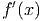
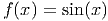
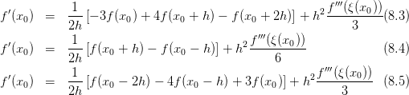

. As chamadas fórmulas de diferenças
finitas podem ser obtidas de várias formas. Começamos discutindo a
mais básica delas, a chamada fórmula de diferenças progressiva de ordem
1.
. As chamadas fórmulas de diferenças
finitas podem ser obtidas de várias formas. Começamos discutindo a
mais básica delas, a chamada fórmula de diferenças progressiva de ordem
1.
A técnica de diferenças finitas consiste em aproximar a derivada de uma função
via fórmulas discretas que requerem apenas um conjunto finito de pares
ordenados . As chamadas fórmulas de diferenças
finitas podem ser obtidas de várias formas. Começamos discutindo a
mais básica delas, a chamada fórmula de diferenças progressiva de ordem
1.
Seja dada uma função diferenciável  . A derivada
. A derivada  da função
da função
 no ponto
no ponto  é dada por
é dada por
 |
Deste limite, tomando  pequeno (não muito pequeno para evitar o
cancelamento catastrófico), é esperado que possamos obter uma aproximação
razoável para
pequeno (não muito pequeno para evitar o
cancelamento catastrófico), é esperado que possamos obter uma aproximação
razoável para  calculando:
calculando:
 | (8.1) |
Aqui,  é a chamada fórmula de diferenças progressiva de ordem 1 (ou
de primeira ordem).
é a chamada fórmula de diferenças progressiva de ordem 1 (ou
de primeira ordem).
Exemplo 8.1.1. Use a fórmula de diferenças finitas progressiva de ordem 1,
calcule aproximações da derivada de  no ponto
no ponto  usando
usando
 ,
,  ,
,  ,
,  ,
,  e
e  . Então, compute o erro
. Então, compute o erro
 obtido com cada valor de
obtido com cada valor de  .
.
Solução. Usando a fórmula de diferenças dada na equação (8.1), devemos calcular:
 |
para cada valor de  solicitado. Fazendo isso, obtemos:
solicitado. Fazendo isso, obtemos:
 |
No Scilab, podemos calcular a aproximação da derivada  com
com  usando as seguintes linhas de código:
usando as seguintes linhas de código:
E, similarmente, para outros valores de  e
e  .
. 
Exploremos o Exemplo 8.1.1 um pouco mais. Observamos que, para valores
moderados de  , o erro
, o erro  diminui linearmente com
diminui linearmente com  (veja
Figura 8.1). Isto é consequência da ordem de truncamento da fórmula de
diferenças finitas aplicada (que é de ordem 1). Porém, para valores muito
pequenos de
(veja
Figura 8.1). Isto é consequência da ordem de truncamento da fórmula de
diferenças finitas aplicada (que é de ordem 1). Porém, para valores muito
pequenos de  , o erro passa a aumentar quando diminuímos
, o erro passa a aumentar quando diminuímos  . Isto é
devido ao efeito de cancelamento catastrófico.
. Isto é
devido ao efeito de cancelamento catastrófico.
Podemos construir fórmulas de diferenças finitas para uma função  (suave)
no ponto
(suave)
no ponto  a partir de sua expansão em série de Taylor. Em alguns casos,
este procedimento acaba por nos fornecer, também, a ordem de truncamento da
fórmula.
a partir de sua expansão em série de Taylor. Em alguns casos,
este procedimento acaba por nos fornecer, também, a ordem de truncamento da
fórmula.
A fórmula de diferenças finitas progressiva pode ser obtida fazendo a seguinte expansão em série de Taylor:
 |
Então, isolando  , obtemos:
, obtemos:
 |
o que corrobora que o erro de truncamento da fórmula de diferença finitas progressiva:
 |
é de ordem 
A fórmula de diferenças finitas regressiva também pode ser obtida fazendo, agora, a seguinte expansão em série de Taylor:
 |
Então, isolando  , obtemos:
, obtemos:
 |
Desta equação, temos que a fórmula:
 |
a qual é chamada de fórmula de diferenças finitas regressiva tem erro de
truncamento da ordem  .
.
A fórmula de diferenças finitas central pode-se obter de duas expansões em série de Taylor: uma progressiva e outra regressiva. Seguem as expansões:
 |
Fazendo a primeira equação menos a segunda, obtemos:
 |
Então, isolando  obtemos:
obtemos:
 |
Desta equação, temos que a fórmula:
|
|
a qual é chamada de fórmula de diferenças finitas central e tem erro de
truncamento da ordem  .
.
Exemplo 8.1.2. Calcule a derivada numérica da função  no ponto
no ponto  usando diferenças progressivas, diferenças regressivas e
diferenças centrais com
usando diferenças progressivas, diferenças regressivas e
diferenças centrais com  ,
,  e
e  .
.
Solução. A tabela abaixo mostra a derivada numérica para cada valor de .
| Diferenças | h=0,1 |
| Progressivas |  |
| Regressivas |  |
| Centrais |  |
| Diferenças | h=0,01 |
| Progressivas |  |
| Regressivas |  |
| Centrais |  |
| Diferenças | h=0,01 |
| Progressivas |  |
| Regressivas |  |
| Centrais |  |

Exemplo 8.1.3. Calcule a derivada numérica e o erro de truncamento
de  em
em  pela fórmula de diferença progressiva para
pela fórmula de diferença progressiva para
 ,
,  e
e  .
.
Solução. Como  , então
, então  .
.

 .
. 
Para entender como os erros de arredondamento se propagam ao calcular as derivadas numéricas vamos considerar o operador de diferenças finitas progressivas

 para a derivada, a sua aproximação numérica
para a derivada, a sua aproximação numérica
 e a representação em número de máquina do operador
e a representação em número de máquina do operador  que
denotaremos por
que
denotaremos por  . Seja
. Seja  o erro de arredondamento ao
calcularmos a derivada e consideremos
o erro de arredondamento ao
calcularmos a derivada e consideremos


 e
e  são as representação em ponto flutuante dos números
são as representação em ponto flutuante dos números
 e
e  , respectivamente. A diferença do valor da derivada e sua
aproximação representada em ponto flutuante pode ser estimada da seguinte
forma:
, respectivamente. A diferença do valor da derivada e sua
aproximação representada em ponto flutuante pode ser estimada da seguinte
forma: ![| --------- ----- |
|| ---------|| || f(x + h) − f(x ) ||
|f′(x ) − D+,hf (x)| = ||f′(x) − ----------------(1 + ε (x,h ))||
| (------h-- -----
|| f (x + h) − f(x) f (x + h ) − f (x + h)
= ||f′(x) − ---------------- + --------------------
) h | h
f(x-) −-f-(x-) ||
+ h (1 + ε)||
| ( ---------
|| ′ f-(x-+-h-) −-f-(x) f(x-+-h-) −-f-(x-+-h-)
= ||f (x) + − h − h
----- ) |
f(x-) −-f-(x-) ||
+ h (1 + ε)||
| | ( |-------- |
|| ′ f(x-+-h)-−-f(x-)|| ||f-(x +-h) −-f(x-+-h)||
≤ ||f (x) − h || + || h ||
||---- ||) || ||
+ ||f-(x) −-f(x)|| |1 + ε| + ||f(x-+-h) −-f(x)||ε
| h | | h |
(|| || || ||)
≤ M h + ||δ-||+ ||δ|| |1 + ε| + |f′(x )|ε
|h | |h|
( 2δ)
≤ M h + --- |1 + ε| + |f ′(x)|ε
h](main3528x.png)

Esta estimativa mostra que se o valor de  for muito pequeno o erro ao
calcular a aproximação numérica cresce. Isso nos motiva a procurar o valor ótimo
de
for muito pequeno o erro ao
calcular a aproximação numérica cresce. Isso nos motiva a procurar o valor ótimo
de  que minimiza o erro.
que minimiza o erro.
Solução. Segue a tabela com os valores da derivada para vários valores de
 .
.
 |
 |
 |
Observe que o valor exato é  e o
e o  ótimo é algo entre
ótimo é algo entre  e
e
 .
. 
Para aproximar a derivada de uma função  em
em  ,
,  ou
ou  usaremos os três pontos vizinhos
usaremos os três pontos vizinhos  ,
,  e
e  . Uma
interpolação usando polinômios de Lagrange para esses três pontos é da forma:
. Uma
interpolação usando polinômios de Lagrange para esses três pontos é da forma:

 é
é
 | (8.2) |
Trocando  por
por  , temos
, temos
 |
Considerando uma malha equiespaçada onde  e  ,
temos:
,
temos:
![′ − 3h − 2h
f (x0) = f (x0 )(− h-)(−-2h-) + f (x1)(h)(−-h)
′′′
--−-h--- f--(ξ-(x0-))-
+ f(x2)(2h )(h ) + 6 ((− h )(− 2h ))
[ ] ′′′
= -1 − 3-f(x0) + 2f(x1) − 1f (x2) + h2 f--(ξ(x0-))
h 2 2 3](main3559x.png) |
Similarmente, trocando  por
por  ou trocando
ou trocando  por
por  na expressão (8.2),
temos outras duas expressões
na expressão (8.2),
temos outras duas expressões
![1 [ 3 1 ] f ′′′(ξ(x0))
f′(x0) = -- − -f(x0) + 2f(x0 + h) − --f(x0 + 2h) + h2----------
h [ 2 ]2 ′′′ 3
f′(x + h) = 1- − 1f(x ) + 1f (x + 2h) + h2f--(ξ(x0 +-h))
0 h 2 0 2 0 6
1 [1 3 ] f′′′(ξ(x0 + 2h))
f′(x0 + 2h) = -- -f(x0) − 2f (x0 + h ) + -f(x0 + 2h) + h2 ---------------
h 2 2 3](main3565x.png)
Analogamente, para construir as fórmulas de cinco pontos tomamos o polinômio de Lagrange para cinco pontos e chegamos a cinco fórmulas, sendo uma delas a seguinte:
![1 h4
f′(x0) = ----[f(x0 − 2h) − 8f(x0 − h ) + 8f (x0 + h ) − f (x0 + 2h)]+--f(5)(ξ(x0))
12h 30](main3567x.png) | (8.6) |
Solução. A tabela mostra os resultados:
![|--------------------------|------------|---------------|-------------------|
| h | h = 0,1 | h = 0,01 | h = 0,001 |
|--------------------------|------------|---------------|-------------------|
| diferenças progressivas |− 0,2809448 | − 0,3125246 | − 0,3158289 |
|--------------------------|------------|---------------|-------------------|
| diferen ças regressivas |− 0,3545920 | − 0,3199024 | − 0,3165667 |
|--------------------------|------------|---------------|-------------------|
| três pontos usando (8.3) |− 0,3127746 | − 0,3161657 | − 0,3161974 |
|--------------------------|------------|---------------|-------------------|
|-três-pontos-usando--(8.4)--|−-0,3177684--|-−-0,3162135---|---−-0,3161978------|
| | | | |
|-três-pontos-usando--(8.5)--|−-0,3135824--|-−-0,3161665---|---−-0,3161974------|
| | | | |
|cinco--pontos-usando-(8.6)-|−-0,3162384---−-0,316197677---− 0,3161976736860--
| |](main3573x.png)
 .
. 
Para aproximar a derivada segunda, considere as expansões em série de Taylor


 é
é


Solução. A tabela mostra os resultados:

 e
e  .
. 
E 8.1.1. Expanda a função suave  em um polinômio de Taylor adequado
para obter as seguintes aproximações:
em um polinômio de Taylor adequado
para obter as seguintes aproximações:


E 8.1.2. Use os esquemas numéricos do exercício 8.1.1 para aproximar as seguintes derivadas:
 onde
onde  e
e  .
.
 onde
onde  e
e  .
.
 onde
onde  e
e  .
. Use  e
e  e compare com os valores obtidos através da
avaliação numérica das derivadas exatas.
e compare com os valores obtidos através da
avaliação numérica das derivadas exatas.
E 8.1.3. Use a expansão da função  em torno de
em torno de  em polinômios de
Taylor para encontrar os coeficientes
em polinômios de
Taylor para encontrar os coeficientes  ,
,  e
e  tais que
tais que


Resposta.


![′ 1 [ h2 (h2 h1) h1 ]
f(0)= h1+h2l −h1f(−h1)+ h1 − h2 f(0)+ h2f(h2)](main3619x.png)


E 8.1.4. As tensões na entrada,  , e saída,
, e saída,  , de um amplificador foram
medidas em regime estacionário conforme tabela abaixo.
, de um amplificador foram
medidas em regime estacionário conforme tabela abaixo.


 e
e  usando as seguintes técnicas:
usando as seguintes técnicas:
 que
melhor se ajusta aos pontos pelo critério dos mínimos quadrados.
que
melhor se ajusta aos pontos pelo critério dos mínimos quadrados.

Resposta.


 no
ponto
no
ponto  quando
quando  fica pequeno.
fica pequeno.
![′′′
f ′(x0) = -1-[− 3f (x0) + 4f (x0 + h) − f(x0 + 2h)] + h2f-(ξ(x0))(8.3)
2h 3
′ -1- 2f′′′(ξ-(x0-))-
f (x0) = 2h [f(x0 + h) − f(x0 − h)] + h 6 (8.4)
1 f ′′′(ξ(x ))
f ′(x0) = ---[f(x0 − 2h) − 4f(x0 − h) + 3f (x0 )] + h2-------0-- (8.5)
2h 3](main3566x.png)
 em
em  pela fórmula de três e cinco pontos para
pela fórmula de três e cinco pontos para  ,
,  e
e  .
.
 em
em
 para ,
para ,  e
e  .
.